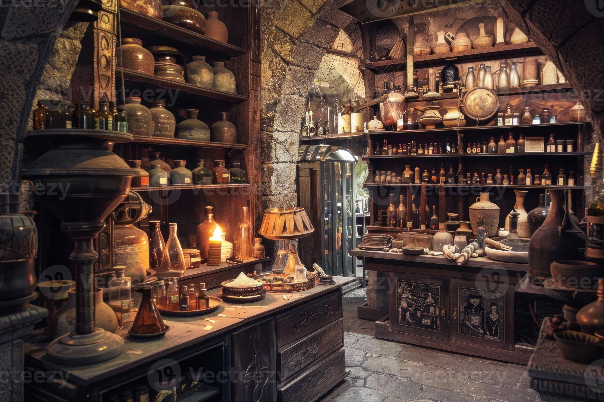
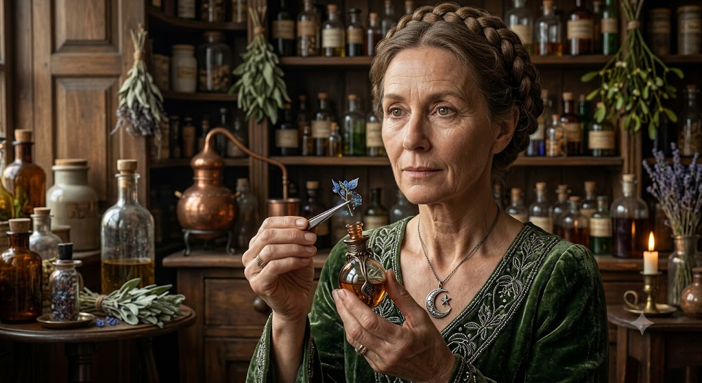

Nossa História (Desde 1867)
Fundada em 1867, nossa loja sobreviveu a séculos de mudanças. Recentemente, a proprietária Anna Innabelle Merigold decidiu trazer nossa tradição para o ambiente digital, garantindo que nossas poções cheguem até você.


Nossas Poções Disponíveis
Carregando poções mágicas...